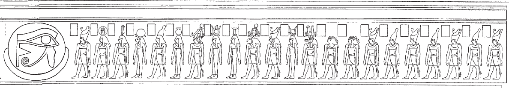

Row D (433-440)
Esna 433
- Location: Travée D
- Date: Uncertain
-
Hieroglyphic Text
- Epigraphic Copy
- Bibliography: Von Lieven 2000, pp. 120-123; Altmann-Wendling 2019, pp. 625-626 (excerpts).
1wnn (tȝ)-sn.t qȝ.tw r ȝḫ.t
ẖr wnm.t n.t Rʿ
ḥr sḥḏ hrw
n bȝ.w ʿnḫ.w n nṯr.w
ḥnʿ tpy.w-tȝ
(m) ḫprw=f
n ḫnty-nḏm-ʿnḫ
ṯz.tw r p.t
ẖr ỉȝbt.t n.t ỉʿḥ
wbḫ.n=s grḥ
m-ḫt hrw
r snḫn ḥȝw n Wsỉr
m st.wt=f
r srnp bȝ
n nṯr ʿȝ 2m ỉmnt.t
m ptr=f
ḥnʿ ḥtpty.w
ỉmy.w ỉmḥ.t
m ỉrw=f nfr
n ḫnty-ỉtr.ty-šmʿ
1 Esna reaches up to the horizon,
bearing the right-eye of Re,
illuminating the day
for the living Bas of the gods
as well as those on earth,
(in) his manifestation
of Foremost of Nedjem-ankh;49
it is raised up to the sky,
bearing the left-eye of the Moon,
it lights up the night
after daytime,
to rejuvenate the body of Osiris
with his rays;
to make young the Ba
of the great god 2 in the West
from beholding him,
along with the blessed dead
who are in the Grotto,
in his good visible form,
of Foremost of the Chapel of Upper Egypt.50
wnm.t ỉȝbt.t
ẖnm(.w) ỉmỉ.tw=sn
ỉtn Ỉtm m
ʿnḫ
sḥḏ wr
sḥḏ tȝ.wy
m mȝwy=f
ʿnḫ=sn n mȝȝ st.wt=f
ḫʿỉ=f m ỉtn
ḫnty ḥr.t rʿ-nb
m-ẖnw skt.t mʿnḏ.t
ḫy wr
ḫy.n=f s(w) r ȝḫ.t
grg nỉw.wt spȝ.wt
n kȝ=f
The right and left eyes,
are united among them,
namely the day (Aten) and night sun (Atum)
in life.
The Great Illuminator,
who illumines the two lands
with his radiance,
they live from seeing his rays;
he appears as the sun disk (Aten),
within the sky, every day,
within the night bark and day bark.
The Great Riser,
he rises to the Akhet:51
cities and nomes are founded
for his Ka.
nfr.wy ḫʿỉ=k
ẖnmw-Rʿ nb tȝ-sn.t
ỉw=k m p.t
m ỉwn wr
wbn.tw rʿ-nb mỉ Rʿ
wbn=k ḥtp=k
nn wš=k ḏr ỉȝḫw
ẖn n=k ỉḫm.w-wrḏ.w
sqd n=k ỉḫm.w-sk.w
m šms=f rʿ-nb
How beautiful is your appearance,
Khnum-Re Lord of Esna!
You are in the sky
as the great Iun-pillar,
rising daily just like Re.
As you rise so you set,
without fail since the Luminous One;
as the indefatigable stars row for you,
so the imperishable stars sail for you,
in his (Re’s) service, daily.
Esna 434
- Location: Travée D
- Date: Commodus
-
Hieroglyphic Text
- Bibliography: Von Lieven 2000, pp. 124-127; Altmann-Wendling 2019, pp. 626-627.
wn(.w) ʿȝ.wy p.t
sn(.w) ʿȝ.y Nw.t
psḏ wḏȝ(.t) n ỉr.t-nb.w
ʿnḫ Wsỉr ỉmy=s m ỉʿḥ
tp ȝbd smd.t
ḥr sḥḏ grḥ mỉ hrw
nb bỉȝy.t
sr ỉỉ(.w) nb.w
mȝwy=f bs=sn ḥr-ʿ
nb wrš rʿ-nb
sḫp(r) hrw.w wnw.wt
ỉr ȝbd.w
tr.w wr.w pw
ḥr ʿq-pr
The doors of heaven are open,
the doors of Nut are open:
the wedjat-eye appears52 for everybody.53
Osiris comes alive in it as the moon,
monthly during the 15th-day festival,54
illuminating the night like the day.
Lord of oracles,
who announces all that is to come,
and his radiance appears immediately.
Lord of time, every day,
who creates days and hours;
that is, He who makes months
and great seasons,
while coming and going.55
Ỉsdn wr ḥr ḥsb
ỉ[p?] wḏȝ(.t)
wḏȝ.tw m dbḥ.w
ḫy n nḥḥ
rnp n ḏ.t
ḏd.tw ḥr nb=sn r=f
nḥḥ ḏ.t pw
wn n=f ỉḫm.w-wrḏ.w
ḥr ỉr(.t) n=f ỉrw=sn
ỉḫm.w-sk.w
ḥr sḫd (r) dwȝ.t
zȝ-Rʿ
nb ḫʿ.w
(qʿmʿts ʿntnyns n(ty)-ḫwỉ)|
ʿnḫ(.w) ḏ.t nḥḥ
Great Isden, reckoning
and accounting the wedjat-eye,
made sound (wḏȝ.tw) with (its) pieces.
The child of nḥḥ-eternity,
youth of ḏ.t-eternity,
so one calls their lord:
namely, ‘nḥḥ-eternity and ḏ.t-eternity.’
To him exist the Indefatigable stars,
performing their duties for him,
and the Inperishable stars
descending (into) the Duat.
The Son of Re,
Lord of Appearances,
(Commodus Antoninus Augustus)|
may he live for all eternity.
Esna 435
- Location: Travée D
- Date: Uncertain
-
Hieroglyphic Text
- Bibliography: Von Lieven 2000, pp. 127-132; Altmann-Wendling 2019, pp. 628-629; Mendel 2022, pp. 439-440.
Left
Right
 Symmetric scenes of 22 divinities facing the full moon with wedjat-inside. On the left, Khnum-Re Lord of Esna leads the procession, followed by a variant of the Theban Ennead (Atum, Shu, Tefnut, Geb, Nut, Osiris, Isis, Nephthys, Thoth, Horus, Hathor, and Sobek). On the right side, Khnum is replaced with Khepri.
Behind that initial group are Hu (Utterance) and Sia (Perception), then 7 crowned gods with similar features. That final group is unique to Esna, and appear to be local ancestors. They receive funerary offerings (incense and cool water) in Esna VII, 564. On a large scene from inside the pronaos, the same gods, albeit without crowns, praise Khnum within the sundisk: Esna VI, 546.
Esna 436
- Location: Travée D
- Date: Uncertain Emperor
-
Hieroglyphic Text
- Bibliography: Von Lieven 2000, pp. 134-139; Altmann-Wendling 2019, p. 629 (excerpts).
wnn (tȝ)-sn.t
r sḫr.w n hȝy.ty
ỉry-wḥm m ḥry-ỉb=s
psḏ.n=s m nbw
tp-ʿ bẖ=f
ḥtp=f m-sṯy=s
tp wḫ
wnm.t ỉȝbt.t ẖnm.tw ỉm=s
ỉtn Ỉtm m ʿnḫ
bȝ ḏsr ḫpr.w
ḫp(r) m 4 bȝ.w
pr=sn hȝỉ=sn
m rn n ḥm=f
ntf pw ỉỉ m p.t r tȝ
Šw pw twȝ=f p.t
ḥtp=f m Mȝnw
m pẖr=s
m rn=f Ṯnn
Esna exists
according to the plans of the firmaments,
the Repeater (Re) is within it.56
It (Esna) shines in gold
right before he rises,
and he sets across from it
every night.
The right and left eyes are united in it,
the solar disk (Aten) and Atum, in life.
The Ba, sacred of manifestations,
who transforms into 4 Bas:57
they come out and go down
in the name of his Majesty.
It is he who comes from heaven to earth,
that means Shu, as he supports the sky.
He sets in Manu,58
going all around it,
in his name of Tatenen.
nṯry.w wbn(.w)
r-ḥr n nb=s(n)
ḫȝty.w m šms=f rʿ-nb
bȝkty.w m-ḫt=f
sqd.w ỉry ḥr bȝk=sn
nsw.t-bỉty
nb tȝ.wy
(ỉwtkrtyrs kysyrs)|
ʿnḫ(.w) ḏ.t nḥḥ
The divine stars who shine
in front of their lord;
the chopping-demons follow him, daily,
the working-stars are after him,
the sailing-stars likewise at their tasks.
The King of Upper and Lower Egypt,
Lord of the Two Lands,
(Autokratoros Caesar)|
may he live for all eternity!
Esna 438
- Location: Travée D
- Date: Uncertain
- Hieroglyphic Text
Cartouches of an Emperor whose name is not entirely clear (Autokrator Caesar Hadrian/Trajan(?) Augustus), before both forms of Khnum.
Esna 439
- Location: Travée D
- Date: Commodus
- Hieroglyphic Text
Cartouches of Commodus before both forms of Khnum.
Esna 440
- Location: Travée D
- Date: Domitian
- Hieroglyphic Text
1ʿnḫ nṯr nfr
wtṯ n ẖnmw
nbỉ m ʿ.wy=f
snn=f ḫnty ʿnḫ.w
nsw.t bỉty
nb tȝ.wy
(twmtyns nty-ḫwỉ)|
1 Live the good god,
begotten of Khnum,
fashioned with his hands,
his replica formoest of the living:
King of Upper and Lower Egypt,
Lord of the Two Lands,
(Domitian Augustus)|
2mry ẖnmw-Rʿ nb tȝ-sn.t
Ptḥ ʿḫỉ p.t
Šw twȝ Nw.t
ỉwn wr
3wp p.t r tȝ
bȝ ʿȝ wr
štȝ.tw r nṯr.w
ʿḫỉ p.t
sš.n=f wȝ.wt=s
4nṯr pn
šȝʿ tȝ m sḫr.w=f
ṯnỉ=f sw r nṯr.w
2 Beloved of Khnum-Re Lord of Esna,
Ptah who lifts up the sky,
Shu who supports Nut,
the great pillar of air,
3 which separate heaven from earth.
The very great Ba,
most mysterious of the gods,
who lifts up the sky,
having opened up its paths.
4 This god
who began the earth through his designs,
and distinguished himself above the gods.